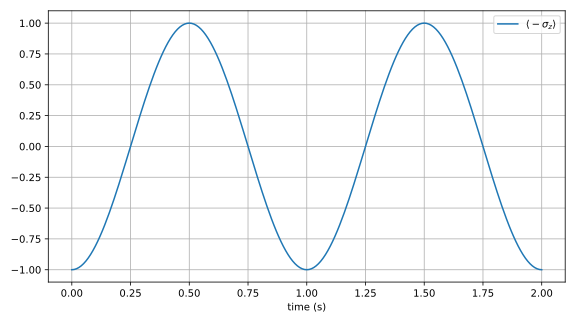

Getting Started
First Steps
The first step to using Schrodinger.jl is to install it. This is easy to do with Julia's package manager. Type Pkg.clone("https://github.com/jebej/Schrodinger.jl.git") at the Julia REPL to download the package to your computer. From there, the package can be used or imported like any other Julia package:
using SchrodingerQuantum States
In quantum mechanics, one of the most fundamental object for describing the state of a system is a state vector. State vectors represent pure quantum states, as opposed to mixed quantum stated, but we will get to that later.
Schrodinger.jl uses the ubiquitous "bra-ket" formalism to describe pure states. A ket is nothing more than a normal (column) vector, which in linear algebra lingo are elements of a vector space. In quantum mechanics, the vector space within which ket vectors live is called a Hilbert space.
Kets (and their dual, bras) are therefore finite-, or infinite-dimensional vectors. To create a ket in Schrodinger.jl, use the Ket function with a vector as an argument:
julia> g = Ket([1,0])
2-d Ket{Array{Float64,1},1} with dimensions 2
1.00∠0°|0⟩The output is a bit busy, so let us go through it.
The input to the Ket function was a 2-d vector [1,0]. This can be seen of the first line of the output, which starts with "2-d". The next term is the type of the object, which is a Schrodinger (the package name) Ket (the type itself). The Ket type is parameterized by two values, which are seen within the curly brackets and separated by a comma: first, the type of the underlying data, which here is a 1-d Array of Float64 values (by default, kets and other objects are stored in the format you give to the constructor, although the elements will be converted to floating point values), and second, the total number of subspaces in the full Hilbert space that the Ket lives in. Here, the number is simply 1. The end of the line states the subspace dimensions, but since we have only 1 subspace with dimension 2, this is not very interesting.
The second line prints the vector in bra-ket polar notation. Since the vector we passed had the entry "1" in the "zeroth" (which is the first) dimension, the ket we get is simply $|0⟩$.
Schrodinger.jl only supports finite dimensional Hilbert spaces. If the physical system you want to describe is infinite-dimensional, it will need to be truncated.
All objects in Schrodinger.jl are expressed in the computational or number basis. This means that the ground state is $|0⟩$, and exited states are numbered starting from 1: $|1⟩, |2⟩, |3⟩...$
To learn more about quantum states in Schrodinger.jl, including mixed states represented by density matrices, please see the next section.
Operators
States are useful, but we need to do something with them. This is what an Operator is for. Note that Operators have the same Julia type as density matrices (the Operator type), but they can be non-Hermitian, and are in general not normalized.
Operators act on elements of a Hilbert space (that is, on kets) to modify them. An operator is thus a like a function that takes as input a ket, and returns a new one. The natural representation for an operator is a matrix, but in Schrodinger.jl you need to use the Operator type, which stores a matrix and other important information about the operator.
Arbitrary operators can of course be created, but let's take a look at one that is built-in, the $σ_x$ operator:
julia> σx
2×2 Operator{SparseMatrixCSC{Float64,Int64},1} with dimensions 2
0.0 1.0
1.0 0.0Notice that the first line of the output is very similar to that of the ket we created above. It lists the dimensions of the matrix, the type (which lists the type of the underlying matrix and the number of subspaces), and the space dimensions (which again is just a single 2-d space).
The state g that we created in the previous section is a ground state with the same dimensions. Thus, the $σ_x$ operator can act on it! This is done simply by multiplying the two objects, with the operator acting to the right on the ket:
julia> σx*g
2-d Ket{Array{Float64,1},1} with dimensions 2
1.00∠0°|1⟩As expected, the output is a Ket, but notice the state is now $|1⟩$! By acting on the ground state $|0⟩$ with the $σ_x$ operator, we obtained the excited state. This is because the $σ_x$ operator is the "flip" operator. It takes $|0⟩$ to $|1⟩$, and $|1⟩$ to $|0⟩$. If we apply $σ_x$ twice then, we get $|0⟩$ back:
julia> σx*σx*g
2-d Ket{Array{Float64,1},1} with dimensions 2
1.00∠0°|0⟩Simple Dynamics
Now that we have a state and an operator, we can perform some time dynamics! The $σ_x$ operator, in the context of a spin-1/2 system, can represent a transverse magnetic field. In such a situation, a particle starting in the ground state will undergo sinusoidal oscillations between $|0⟩$ and $|1⟩$ due to the action of the field. Let's simulate it!
We first set up the Hamiltonian, assuming our field has an angular frequency $ω=1.0×2π$ (i.e. 1 Hz). If we look at a 2 sec timespan, we should thus see 2 full periods. To measure the value of the spin at each instant in time, we choose the $-σ_z$ operator as our observable. The minus sign ensures that the $|0⟩$ state is the lowest energy one (again, because we are in the computational basis).
ω = 1.0*2π # angular frequency
H = ω/2*σx # Hamiltonian
t = (0.0,2.0) # timespan
O = -σz # observable
# output
2×2 Operator{SparseMatrixCSC{Float64,Int64},1} with dimensions 2
-1.0 0.0
0.0 1.0Schrodinger.jl uses units where $ħ$ is equal to 1. Make sure that your Hamiltonian is expressed in units of angular frequency, not energy. If you do have a Hamiltonian expressed in energy units, just use the scale! function: scale!(H,1/ħ). The variable ħ is exported by the module and so can be used as-is.
We can now pass all three arguments (H, g and O) to the sesolve function (Schrodinger Equation solver) to solve for the time dynamics! We also pass a keyword argument saveat to make sure we have enough points. As can be seen, the results match with theory:
res = sesolve(H, g, t, [O], saveat=2/200)
real.(res.evals) ≈ -cos.(ω.*res.times) # check against theory
# output
trueLet's plot the results!
using PyPlot
plot(res.times,real.(res.evals)); xlabel("time (s)"); legend(["\$⟨-σ_z⟩\$"]); grid()
As we predicted, the system oscillates between -1, the expectation value of $-σ_z$ when in the ground state, and 1 when in the excited state.
This concludes the first section of the manual. Hopefully you now know enough to get started with simple quantum operations. If you would like to learn more about the other features of Schrodinger.jl, keep reading!